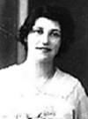
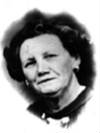
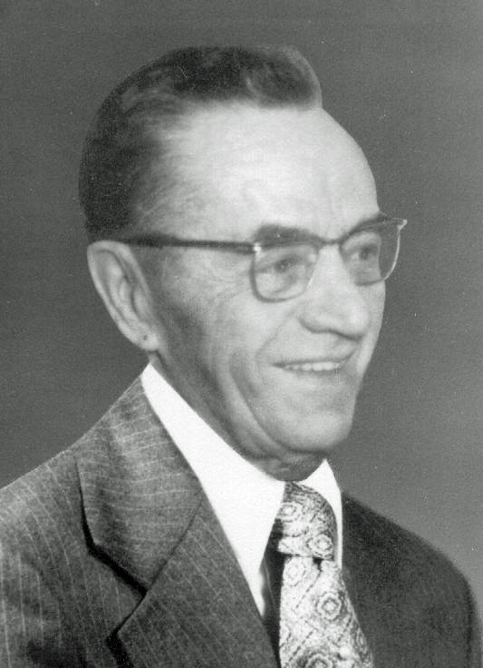
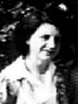
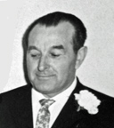
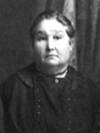
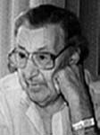

notre ancêtre de la 7ième génération
fiche familiale
 |
Honoré Barriault décède à l'âge de 54 ans. Naissance le 18 mai 1872 à Sillery, cté Québec. Décès le 2 mai 1927 à Laverlochère, cté Témiscamingue. Sépulture au cimetière de Laverlochère. Occupation: Cultivateur. Parrain de Rolland Rivest. Il parlait mieux l'anglais que le français. Père: Fabien Barriault Mère: Marie-Anne Morissette (sa famille) |
Mariage le 21 septembre 1891 à St-Paul de Scotstown, cté de Compton.
 |
1ère épouse: Anna Bourget décède à l'âge de 37 ans. Naissance le 15 août 1875. Décès le 24 mars 1913 à Laverlochère, cté Témiscamingue. Sépulture le 26 mars 1913 au cimetière de Laverlochère. Père: Augustin Bourget Mère: Rosalie Gilbert (sa famille) |
Portrait de la famille d'Honoré Barriault en 1902 à Scotstown

de gauche à droite à partir de la rangée arrière :
Anna Bourget, Marie-Dolora (Dite "Mary") et Honoré
Alexina,Alice et Alphonse
de gauche à droite à partir de la rangée arrière :
Anna Bourget, Marie-Dolora (Dite "Mary") et Honoré
Alexina,Alice et Alphonse
Enfant 1 Léona Barriault
décède vers l'âge de 5 ans.
Naissance le 29 mars 1894 à Scotstown,
cté de Compton.
Baptême le 29 mars 1894 à St-Paul de Scotstown.
Enregistrée sous Marie Léona Baurreault
au registre des baptêmes de l'église St-Paul.
Parrain Fabien Barriault,
marraine Rosalie Gilbert ses grand-parents.
Décès vers 1900 à Scotstown.
-------------------------------------------------------------------------------
décède vers l'âge de 5 ans.
Naissance le 29 mars 1894 à Scotstown,
cté de Compton.
Baptême le 29 mars 1894 à St-Paul de Scotstown.
Enregistrée sous Marie Léona Baurreault
au registre des baptêmes de l'église St-Paul.
Parrain Fabien Barriault,
marraine Rosalie Gilbert ses grand-parents.
Décès vers 1900 à Scotstown.
  |
Enfant 2 Marie-Dolora Barriault décède à l'âge de 31 ans. Naissance le 25 mars 1895 à Scotstown, cté de Compton. Décès le 3 janvier 1927 à Laverlochère, cté Témiscamingue. Mariage le 14 avril 1912 à St-Isidore de Laverlochère. Conjoint: Armand-Maxime Bougie n. 20 avril 18 d. 19 mai 1974. (sa famille) |
|   |
Enfant 3 Alexina Barriault décède à l'âge de 75 ans. Naissance: 17 juillet 1897 à Scotstown, cté de Compton. Baptême: 17 juillet 1897 à St-Paul de Scotstown. Décès: en novembre 1972 à Sudbury, Ont. Enregistrée sous Marie, Elisabeth, Alexina Baurreault au registre des baptêmes de l'église St-Paul. Parrain William Tétreau, marraine Elisabeth Barriault sa tante. Mariage: 6 septembre 1916 à St-Isidore de Laverlochère, Conjoint: Patrice Léonard n. 5 août 1894 d. en 1956. (sa famille) |
|   |
Enfant 4 Alice Barriault décède à l'âge de 63 ans. Naissance: 16 janvier 1899 à Scotstown, cté de Compton. Décès: 8 octobre 1962 à Hôpital Ste-Famille de Ville-Marie Mariage: 11 juillet 1921 à St-Isidore de Laverlochère Conjoint: Lionel Rivest n. 7 mai 1899 d. 13 février 1976. (sa famille) |
| |
Enfant 5 Alphonse Barriault décède à l'âge de 33 ans. Naissance: 26 janvier 1901 à Scotstown, cté de Compton. Baptême: 26 janvier 1901 à St-Paul de Scotstown. Décès: 15 mai 1934 à Laverlochère, cté Témiscamingue. Enregistré sous Joseph, Henri, Alphonse, Polycarpe Barriault au registre des baptêmes à l'église St-Paul. Parrain Joseph Boutin, marraine Alviane Bourget sa tante. Parrain de Damien Rivest. |
  |
Enfant 6 Eugène Barriault décède à l'âge de 84 ans. Naissance: 27 septembre 1906 à Laverlochère, cté Témiscamingue. Décès: 20 octobre 1990 à Rouyn-Noranda. Mariage: 26 juin 1935 à St-Isidore de Laverlochère. Conjointe: Noëlla Rivest n. 26 décembre 1914, d. 22 juin 2003 (sa famille) |
  |
Enfant 7 Olivine Barriault décède à l'âge de 73 ans. Dite "Livine". Naissance: 20 juin 1908 à Laverlochère, cté Témiscamingue. Décès: 29 avril 1982 à Louvicourt. Mariage: 10 avril 1937 à St-Michel-Archange de Rouyn. Conjoint: Arthur Dufour n. 27 septembre 1903 d. 5 février 1994. (sa famille) |
|   |
Enfant 8 Marie-Anna Barriault décède à l'âge de 43 ans. Dite "Néna". Naissance: 2 octobre 1909 à Laverlochère, cté Témiscamingue. Décès: 7 juillet 1953 à Rouyn. Mariage: 10 juillet 1935 à St-Isidore de Laverlochère Conjoint: Ovide Jetté n. 11 nov 1909 d. 13 mai 1977 (sa famille) |
Mariage: 14 octobre 1914
à St-Isidore de Laverlochère
|  |
2ème épouse: Séraphine Charron décède à l'âge de 76 ans. Naissance: 7 septembre 1868 à Hull. Décès: 2 décembre 1944 à Laverlochère, cté Témiscamingue. (sa famille) |
  |
Enfant 1 Gertrude Barriault décède à l'âge de 74 ans. Naissance: 6 juin 1915 à Laverlochère, cté Témiscamingue. Décès: 19 novembre 1989 à Fort Lauderdale, Florida. USA. Mariage: 27 mars 1934 à Kirkland-Lake, Ont. Conjoint: Thomas Beggs n. 27 novembre 1910 d. 5 mars 1993. (sa famille) |